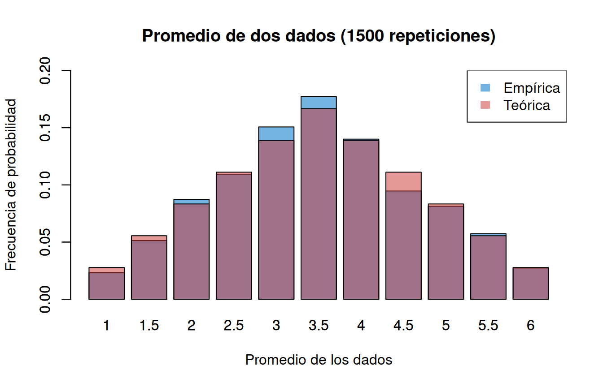
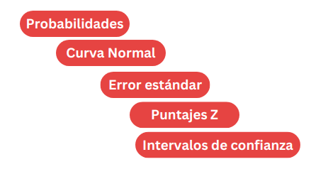
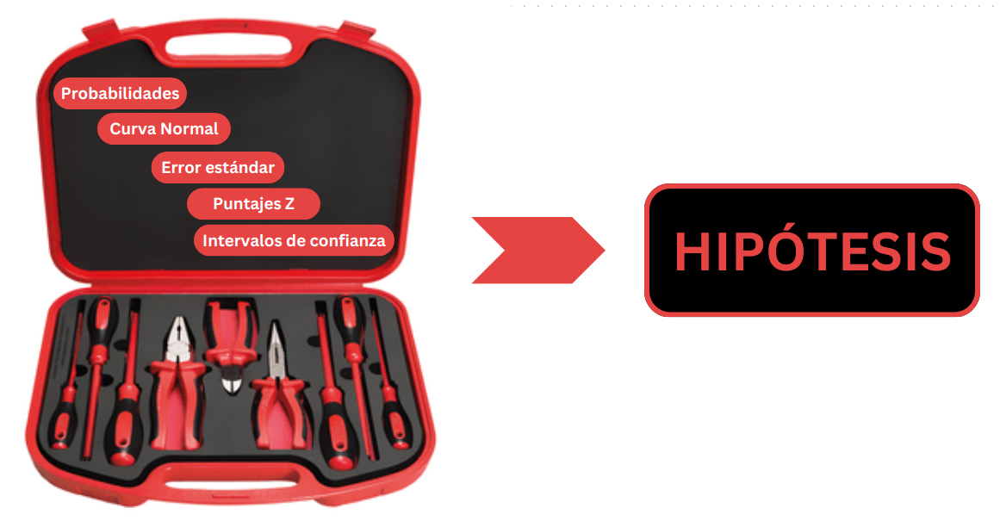
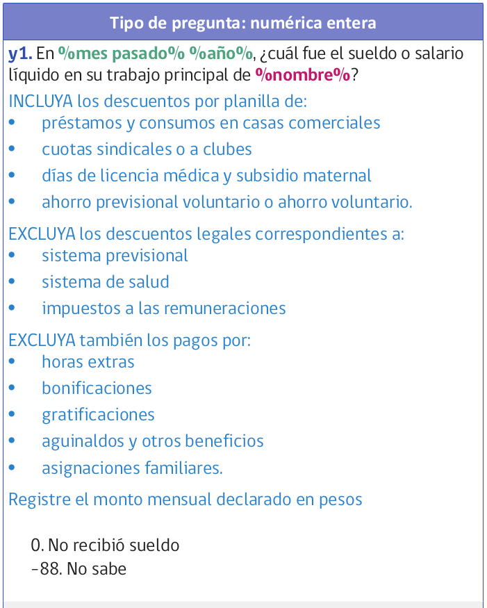
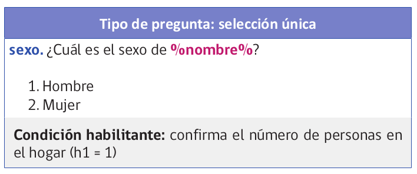
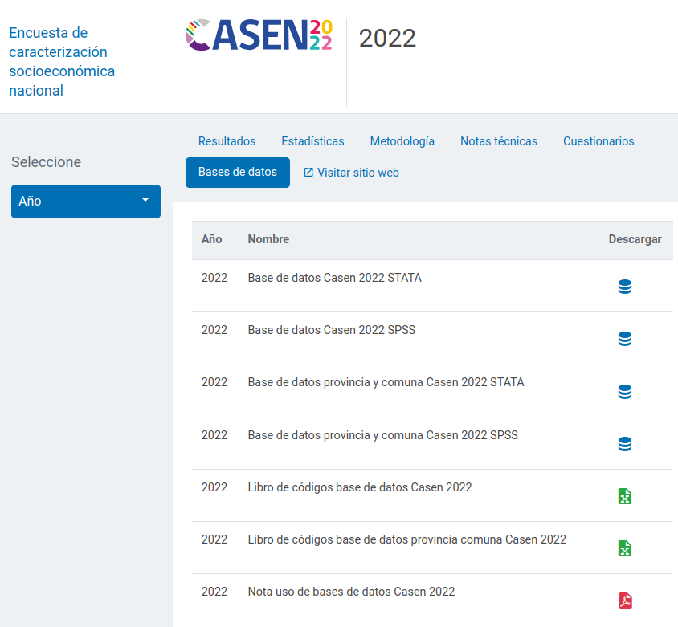
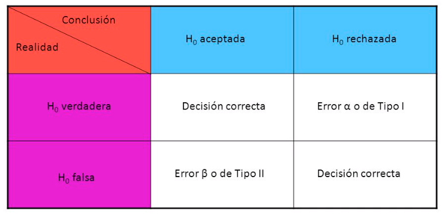

Estadística Correlacional
Inferencia, asociación, y reporte
Juan Carlos Castillo
Sociología FACSO - UChile
2do Sem 2026
correlacional.metodos-facso.org
Inferencia 4:
Falsación, tipos de error y prueba t
¿Qué hemos visto hasta ahora?

¿Qué puedo decir de la población a partir de mi muestra?
PROBABILIDADES … de un rango de valores
¿Cómo llego al rango de valores probables de un parámetro poblacional obtenido a partir de una muestra?

Probabilidades
Podemos calcular probabilidades basados en una distribución teórica de ocurrencia de eventos.
Ej: En teoría, la probabilidad de que salga sello al tirar una moneda es 50%
Mientras más repetimos el evento, más se van a acercar los resultados (distribución empírica) a la probabilidad del evento (distribución teórica)
Curva normal
Hay una serie de eventos que en términos teóricos y empíricos tienen una distribución particular en torno al valor central -> normal
La curva normal es una distribución teórica que nos permite tener un estándar con el cual comparar distribuciones empíricas

Teorema central del límite y error estándar
si pudiera calcular un estadístico en muchas muestras distintas (ej: promedio) este se distribuiría de manera normal
el error estándar es la formula que nos permite obtener el valor de la desviación estándar de los promedios con una sola muestra
\[\sigma_{\bar{X}}=\frac{s}{\sqrt{N}}\]
Puntajes Z
el puntaje Z es una transformación a una métrica de desviaciones estándar del promedio
asumiendo distribución normal, el puntaje Z permite además obtener el valor del percentil de cada puntaje
- es decir, qué porcentaje de la población tiene un valor menor/mayor que el puntaje Z
\[z=\frac{x-\mu}{\sigma}\]

Intervalos de confianza [para el promedio]
rango de probabilidad del valor de un parámetro en la población
Para construirlo, 4 pasos:
1- establecer nivel de confianza (convencionalmente 95%)
2- definir puntaje Z correspondiente a este intervalo (para 95% es 1.96)
3- multiplicar Z por el error estándar
4- restar al promedio (límite inferior) y sumar (límite superior)
\[\bar{X}\pm Z*\frac{\sigma}{\sqrt{N}}\]

¿Qué es una hipótesis?
Una hipótesis es una aseveración o una predicción que se desprende de una teoría sobre una situación que ocurre en la población en estudio
¿Cuándo se puede verificar una hipótesis?
-> NUNCA
… pero, se puede falsar
Popper y la falsabilidad

“el criterio de demarcación que hemos de adoptar no es el de la verificabilidad, sino el de la falsabilidad de los sistemas. Dicho de otro modo: no exigiré que un sistema científico pueda ser seleccionado, de una vez para siempre, en un sentido positivo; pero sí que sea susceptible de selección en un sentido negativo por medio de contrastes o pruebas empíricas: ha de ser posible refutar por la experiencia un sistema científico empírico” (Popper, 1982, p. 40)
Contraste de hipótesis y falsación
El verificar una hipótesis no hace que una teoría sea verdadera
Se puede intentar refutar una teoría (falsarla) mediante un contraejemplo o hipótesis contraria
Si no es posible refutar la hipótesis contraria, entonces la teoría queda aceptada provisionalmente
Ejemplo
Teoría: todos los cuervos son negros
Hipótesis de verificación: hay cuervos negros
Hipótesis de falsación: hay cuervos blancos
Lógica de contraste de hipótesis
- Intentar falsar lo que es contrario a nuestra hipótesis original
- En estadística, esta “hipótesis contraria” se denomina la HIPÓTESIS NULA
buscamos RECHAZAR LA HIPÓTESIS NULA
si logramos rechazar la hipótesis nula (o sea, que lo contrario de nuestra teoría no es verdad), entonces encontramos evidencia a favor de nuestra teoría
Buscamos NO ENCONTRAR cuervos blancos
Hipótesis nula
Hipótesis se denota con la letra \(H\)
La hipótesis nula se denota \(H_0\) (hache cero)
Cero porque en general se refiere a que lo que señala la teoría no existe o es cero en la población
Volvamos a nuestro ejemplo (clase pasada)
¿Existen diferencias salariales entre hombres y mujeres en Chile?
| Hipótesis general | Hipótesis estadística |
|---|---|
| Existen diferencias salariales entre hombres y mujeres | Hipótesis alternativa: Las diferencias son distintas de cero |
| No existen diferencias salariales entre hombres y mujeres | Hipótesis nula: Las diferencias no son distintas de cero |
Cuestionario CASEN


Datos CASEN 2022

Vamos a generar una submuestra de 350 casos de CASEN para ilustrar de mejor manera el sentido del test de hipótesis
pacman::p_load(sjmisc, haven, dplyr, stargazer, interpretCI, kableExtra)
load("casen2022_inf2.Rdata")
options(scipen = 999) # para evitar notación en los ceros
set.seed(20) # para fijar el resultado aleatorio
casen_350 <- casen2022_inf %>% select(salario, sexo) %>% sample_n(350)
casen_350 <- na.omit(casen_350)Datos
======================================================
Statistic N Mean St. Dev. Min Max
------------------------------------------------------
salario 343 634,402.300 459,180.200 30,000 2,900,000
sexo 343 1.402 0.491 1 2
------------------------------------------------------casen_350 %>% # se especifica la base de datos
dplyr::group_by(sexo = sjlabelled::as_label(sexo)) %>% # se agrupan por la variable categórica y se usan sus etiquetas con as_label
dplyr::summarise(Obs. = n(), Promedio = mean(salario, na.rm = TRUE), SD = sd(salario, na.rm = TRUE)) %>% # se agregan las operaciones a presentar en la tabla
kable(format = "markdown") # se genera la tabla| sexo | Obs. | Promedio | SD |
|---|---|---|---|
| 1. Hombre | 205 | 654585.4 | 468692.5 |
| 2. Mujer | 138 | 604420.3 | 444666.0 |
Diferencia salarial = 654.585-604.420=50.165
Procedimiento: 5 pasos de la inferencia (ajustados de Ritchey)
Formular hipótesis ( \(H_0\) y \(H_A\))
Estadístico de prueba empírico (ej: Z o t)
Establecer la probabilidad de error \(\alpha\) (usualmente 0.05) y obtener valor crítico (teórico) de la prueba correspondiente
Cálculo de intervalo de confianza / contraste valores empírico/crítico
Interpretación
1. Formular hipótesis
Contrastamos la hipótesis nula (no hay diferencias de promedios entre grupos):
\[H_{0}: \bar{X}_{hombres} - \bar{X}_{mujeres}= 0\]
En referencia a la siguiente hipótesis alternativa:
\[H_{a}: \bar{X}_{hombres} - \bar{X}_{mujeres} \neq 0\]
2. Estadístico de prueba
- Para la diferencia de medias, el estadístico de prueba es:
\[t=\frac{\bar{X}_{hombres}-\bar{X}_{mujeres}}{SE}\]
- este valor nos va a permitir contrastar la diferencia de medias empírica con la diferencia de medias teórica (que es 0, según \(H_0\))
Important
En general el estadístico de prueba es la magnitud de interés (en este caso, la diferencia de medias) dividido por el error estándar. Por lo tanto, su resultado nos dice cuántos errores estándar hay entre la diferencia de medias empírica y la diferencia de medias teórica (que es 0, según \(H_0\))
2. Estadístico de prueba
Cada estadístico tiene su propia fórmula de error estándar
En el caso de la diferencia de medias (en este caso, de hombres y mujeres), el error estándar es:
\[SE=\sqrt{\frac{\sigma_{diff}}{n_a}+\frac{\sigma_{diff}}{n_b}}\]
Donde
\[\sigma_{diff}=\frac{\sigma^2_{a}(n_a-1)+\sigma^2_{b}(n_b-1)}{n_a+n_b-2}\]
- como se puede apreciar, es una extensión del error estándar del promedio pero para dos grupos distintos
2. Estadístico de prueba
Cálculo de la desviación estándar de las diferencias de promedios:
\[ \begin{align*} \sigma_{diff}&=\frac{468692^2(205-1)+444666^2(138-1)}{205+138-2} \\ \\ &=\frac{44813126936256+27088715663172}{341}\\ \\ &=210855843400 \end{align*} \]
2. Estadístico de prueba
Y entonces el error estándar de la diferencia de medias:
\[ \begin{align*} SE&=\sqrt{\frac{\sigma_{diff}}{n_a}+\frac{\sigma_{diff}}{n_b}} \\ \\ &=\sqrt{\frac{210855843400}{205}+\frac{210855843400}{138}}\\ \\ &=50561 \end{align*} \]
2. Estadístico de prueba
- Ya que tenemos ahora el Error Estándar (SE), reemplazamos:
\[t=\frac{\bar{X}_{hombres}-\bar{X}_{mujeres}}{SE}=\frac{50165}{50561}=0.9904\]
El valor de \(t\) obtenido de 0.9904(empírico) nos permite contrastar la diferencia de medias empírica con la diferencia de medias teórica (que es 0, según \(H_0\)).
Por lo tanto, la pregunta es: ¿es 0.9904 un valor suficientemente grande para rechazar la hipótesis nula?
Para poder responder esto, necesitamos establecer un nivel de confianza/probabilidad de error
3. Probabilidad de error
asumimos que existe una probabilidad de error al rechazar \(H_0\), para lo cual fijamos un límite convencional -> usualmente un 5%
¿error de qué? -> de rechazar \(H_0\) cuando esta existe en la población.
Esto se conoce como la probabilidad de error Tipo I o \(\alpha\) (alfa)

3. Probabilidad de error
- En nuestro ejemplo: {style=“font-size: 0.8em;”}
\[H_{0}: \bar{X}_{sueldo\ mujeres} - \bar{X}_{sueldo\ hombres}= 0\]
Si hay diferencias de sueldo en la población y rechazamos \(H_0\): decisión correcta
Si no hay diferencias de sueldo en la población y rechazamos \(H_0\): Error tipo I
El Error Tipo I equivale a encontrar cosas en nuestra muestra que no existen en la población
3. Probabilidad de error
3. Probabilidad de error
Error Tipo I
Encontrar algo que no existe en la población
Error Tipo II
No encontrar algo que si existe en la población
3. Probabilidad de error
Hipótesis nula y \(\alpha\)
Entonces, el \(\alpha\) es la probabilidad de error que fijamos para rechazar la hipótesis nula
en lenguaje de prueba de hipótesis, es la probabilidad de rechazar la hipótesis nula cuando esta es verdadera
o la probabilidad de encontrar diferencias entre grupos de la población cuando estas no existen
o en simple, la probabilidad de que nos estemos equivocando
3. Probabilidad de error
Nivel de confianza y probabilidad de error \(\alpha\)
el nivel de confianza de una estimación se determina de manera convencional, usualmente se acepta 95% o 99% de confianza
un nivel de confianza se expresa en una probabilidad de error \(\alpha\) (alfa), que es 1 - nivel de confianza
para un nivel de confianza de 95%, \(\alpha=1-0.95=0.05\)
para un nivel de confianza de 99%, \(\alpha=1-0.99=0.01\)


4. Intervalo y valor crítico
En el paso 2 calculamos el t empírico. En este paso calcularemos el t crítico
Si el t empírico es mayor que el t crítico, entonces rechazamos la hipótesis nula
a diferencia de la prueba Z (donde los valores son fijos), el los valores críticos de t dependen del tamaño muestral
el tamaño muestral determina los grados de libertad (df) de la prueba t, que se calculan como \(df=n_1+n_2-2\) (es decir, es el tamaño de la muestra menos 2)
t

4. Intervalo y valor crítico
- Para el caso de nuestra muestra, con un tamaño de 350 casos, los grados de libertad son:
\[df=n_1+n_2-2=205+138-2=341\]
Lo que corresponde a un valor crítico de \(t_{0.975}=1.96\) (para un nivel de confianza de 95%)
Esto se puede obtener en R con la función
qt():
Important
El valor crítico de t se aproxima al valor crítico de Z cuando el tamaño muestral es grande (usualmente n>30)
4. Intervalo y valor crítico
Ahora podemos calcular el intervalo de confianza para la diferencia de medias:
\[ \begin{align*} \bar{x}_1-\bar{x}_2 &\pm t_{\alpha/2}*SE_{\bar{x_1}-\bar{x_2}} \\\\ 50165 &\pm 1.96*50561 \\\\ 50165 &\pm 99099.56 \\\\ CI[-49287.48&;149617.63] \end{align*} \]
4. Intervalo y valor crítico
- Test de hipótesis de diferencias en R
Two Sample t-test
data: salario by sexo
t = 0.99215, df = 341, p-value = 0.3218
alternative hypothesis: true difference in means between group 1 and group 2 is not equal to 0
95 percent confidence interval:
-49287.48 149617.63
sample estimates:
mean in group 1 mean in group 2
654585.4 604420.3 4. Intervalo y valor crítico
- Además del intervalo de confianza, podemos realizar el test de hipótesis comparando el valor empírico de t con el valor crítico de t
- Si el valor empírico de t es mayor que el valor crítico de t, entonces rechazamos la hipótesis nula
- En nuestro caso:
\[ t_{\text{emp}}=0.9904 > t_{\text{crít}}=1.96 \Rightarrow \text{rechazamos } H_0 \]
5. Interpretación
- Nuestro intervalo de confianza contiene el cero, ya que el valor empírico de t es menor que el valor crítico de t, por lo que no se rechaza la hipótesis nula
Con un 95% de confianza (5% de probabilidad de error) no se encuentra evidencia de diferencias salariales entre hombres y mujeres.
Alternativamente: No existe evidencia que las diferencias salariales entre hombres y mujeres sean distintas de cero, con un 5% de probabilidad de error
Resumen
hipótesis: aseveraciones sobre algo que ocurre en la población, usualmente asociaciones entre conceptos / variables
las hipótesis se contrastan con un criterio de falsabilidad: se trata de falsar/rechazar la Hipótesis nula (H0)
para rechazar necesitamos un estadístico de prueba empírico, que se contrasta con un valor crítico (teórico) de rechazo según una probabilidad de error \(\alpha\)
para la diferencia de medias, el estadístico de prueba es t
Recomendaciones

Estadística Correlacional
Inferencia, asociación, y reporte
Juan Carlos Castillo
Sociología FACSO - UChile
2do Sem 2026